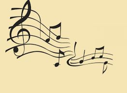

|
Mijn definitie van humor
Humor is een gevoel, een emotie, een geluk, blijheid en lachen met je ogen en je hart. Humor is niet enkel je lippen naar boven bewegen. Mijn humor kan voor jou flauwekul zijn of omgekeerd.
Definitie volgens het woordenboek
Humor is het vermogen om iets wat grappig, amusant of geestig is aan te voelen, te waarderen of tot uitdrukking te brengen. Humor kan ook een aanduiding zijn van de expressie van iets komisch of grappigs in woord, daad of geschrift.[i]
Etymologie
De term humor is, evenals als het woord humeur, afgeleid van het Griekse woord voor vocht n of. sap. De oude Grieken meenden namelijk dat de lichaamssappen het menselijk temperament of stemming regelden.
Humor buiten het boek
We waren in de helft van vorige eeuw nog niet zo bekend met het fenomeen televisie.
Hoeveel families zaten er in de jaren vijftig niet samen om naar ‘Schipper naast Mathilde’ te kijken? Schipper naast Mathilde was een succesvolle Vlaamse televisiesitcom (Sitcom is een genre van het type komedieserie dat gesitueerd wordt rond een vaste groep personages in een tamelijk alledaagse omgeving. Door het toeval en de vreemde eigenschappen van de personages ontstaan daarin komische situaties.) die van 10 mei 1955 tot 19 juli 1963 op de Vlaamse openbare omroep te zien was. Het programma is één van de grote klassiekers van de Vlaamse televisie. Iedereen lachte ermee en iedereen sprak erover.
De Collega’s is een dwarsdoorsnede van de Vlaamse ambtenarij in de jaren ’70. Politieke benoemingen, vriendjespolitiek, partijkaarten, roddels, gekibbel en alles wat nog komt kijken bij het bureauwerk op de vierde verdieping van het Ministerie van Financiën. Het is een Vlaamse komische reeks gemaakt door de openbare omroep BRT. Ze liep drie seizoenen lang, van 9 september 1978 tot 21 februari 1981. Er werden in totaal 37 afleveringen gemaakt.[ii]
F.C. De Kampioenen: De serie draait rond de belevenissen van een slecht presterende café-voetbalploeg, genaamd F.C. De Kampioenen, met een focus op de leefwereld van enkele gezichten uit het team. De meeste scènes spelen zich af in het clublokaal (café), de woonsten van de hoofdpersonages en het handelspand van de buurman. De serie startte op 6 oktober 1990 en de laatste (273ste) aflevering werd na 21 seizoenen uitgezonden op 26 februari 2011 [iii].
Buitenlandse humoristische films- en personages
Je kent ongetwijfeld Laurel and Hardy, Charlie Chaplin, The Pink Panther met Inspector Clouseau en zijn legendarische zin: “Do you have a reum?” Jerry Lewis, Benny Hill, Fernandel, Louis de Funès, Hyacinth Bucket, …
Cabaretiers / sing- en songwriters (de humoristen van vandaag en gisteren) [iv]
Belgen: Leo Martin en Gaston Berghmans, Philippe Geubels, Jos Ghijsen, Geert Hoste, Urbanus (met zijn half pakje slaag), Jef Cassiers, Els de Schepper, Yvonne Verbeeck, Jacky Lafon, Martin De Jonghe, Jan Vandijck, …
Nederlanders: Wim Sonneveld, Tom Manders, Paul van Vliet, Frans Halsema, Herman van Veen en nog veel meer.
Voor mij voor eeuwig en altijd: Toon Hermans. Hoe Toon met woorden kon spelen, dat zal niemand hem ooit nadoen. Een voorbeeld: de kip en het ei. “Onze Nederlandse kippen moeten toch pijn hebben als ze een ei moeten leggen. Zo’n ei wordt er toch uitgeperst, ploef ‘een ei’, ai. Maar de Franse kippen die laten het er gewoon uitglijden: un œuf. Je hoort het er langzaam uitglijden. Dat is toch veel aangenamer voor de kip. De kip legt een ei: [de kip legt een ei] [v]en de Franse kip doet het op een zeer zachte manier: La poule pond un oeuf: [la poule pond un œuf].
Een goede comedian [vi]
Niet iedereen heeft het in zich om een goede comedian te zijn of worden. Doorbreken en er je beroep van maken is maar voor een kleine groep weggelegd. Volgens de vakkenners is een goede comedian iemand die op het podium zichzelf durft te zijn. De noodzaak van het feit dat ze op het podium staan en hun verhaal komen vertellen moet overkomen op het publiek. Grappen schrijven en vertellen kan iedereen leren, maar een goede performer laat ook zijn kwetsbaarheid zien en durft zijn unieke verhaal te vertellen. Dit onderscheidt een rascomedian van een gewone grappenverteller.
Humor in schrijfvorm [vii]
Je zult zelden een volledig humoristisch boek vinden. Humor is bijvoorbeeld proza, poëzie, kortverhalen.
Op het internet heb ik veel gevonden over humor. Onder andere de onderstaande negen tips, waaraan komisch schrijven het best kan aan voldoen:
ü Houd de aandacht van de lezer met absurditeit
ü Houd het publiek op het puntje van zijn stoel
ü Zoek naar een element om te herhalen
ü Gebruik herkenbaarheid
ü Hanteer jouw jeugdige kant
ü Schrijf in korte zinnen
ü De kracht van tien
ü Verleg jouw grenzen
ü Sta open
Eigenlijk hebben de bovenstaande negen tips mij geholpen om iets komisch ‘proberen’ te schrijven.
Bronnen
[ii] https://nl.wikipedia.org/wiki/De_Collega's
[iii] https://nl.wikipedia.org/wiki/F.C._De_Kampioenen_(televisieserie)
[iv] http://www.seniorplaza.nl/6070_Cabaret.htm
[v] http://www.fontspace.com/philing/phon%C3%A9tique
[vi] http://comedyweb.nl/stand-up-comedy-in-nederland/
[vii] http://www.schrijvenonline.org/tips/negen-tips-om-humoristisch-te-schrijven
Wie – Wat – Waar – Wanneer – Waarom
Het waren telkens lijnen, sporten en hokken die ze zagen. Sommigen zaten of stonden erop. Anderen hingen ertussen. De ene was een bol die hol was. De andere was dan weer vol. Ze hadden allemaal een stok, behalve die ene natuurlijk: de holle bol. Als hij zin had, nam hij ook een stokje, maar hij bleef hol.
Ze hoorden allemaal samen en toch waren ze verdeeld in hokjes of kamertjes. In het begin werd hen verteld hoe groot hun kamers waren. Ze konden niet altijd met elkaar leven, maar zonder elkaar waren ze nog minder dan niets waard. In sommige hokjes hing een kruis. Pfff dan moesten ze zeer geconcentreerd zijn. En als ze mee naar buiten genomen werden, dan was het feest. Ze hielden dan rekening met de mollen. Daar mochten ze zeker niet op trappen. Het allerergste was wanneer ze aan elkaar gebonden waren. Er werden er soms twee aan elkaar vastgemaakt, soms drie, maar ook wel eens met z’n vieren. Leuk was toch iets anders. Van rusten was maar zelden sprake. Altijd maar werken en werken en werken.
In de familie had je veel karakters, uiteraard want ze waren met zeven en ieder had zijn eigenheid. Zo waren er altijd enkelen die helemaal naar boven klommen. Er werden dan meer lijnen of sporten bijgemaakt. Anderen kropen dan weer in de grond van schaamte. Ook dan kwamen er ook lijnen of sporten en kamers bij. Er waren toch ook wel een aantal familieleden die een stok met vlaggen droegen. De ene kreeg één vlag, de andere twee en nog een derde familielid kreeg er drie. Je zou maar bij de uitverkorenen horen die drie vlaggen moest dragen.
Als ze allemaal samen waren, werden ze wel eens kunst of Kunst genoemd. Sommigen zeiden tegen hen dat ze schreeuwers en grote lawaaimakers waren. Daar konden zij toch niets tegen doen. Ze ondergingen het allemaal heel braafjes. Behalve als één van hen weer eens de valsaard wou zijn, dan kreeg je naar je oren dat horen en zien verging. Verdomme, verdorie, dan moesten ze weer helemaal opnieuw beginnen. Dat was écht bedoeld als straf.
Regelmatig hoorden ze ook een sleutel aan de voordeur. Er waren verschillenden die hun eigen sleutel hadden. Soms kwam Oktaaf mee. Jeetje, die was altijd in opperbeste stemming, maar je moest en zou hem bijhouden. Je mocht hem onder geen enkel beding kwijtspelen. En als mijnheer Majoor (of hoe heette hij weer met zijn echte naam?), erbij stond, dan zag je zelfs dat er familieleden hun stok naar benden lieten vallen, ze lieten die dan maar bengelen. Ze konden niet anders dan doorbijten en het beste ervan maken. Ze kregen ook wel eens bezoek van iemand, die altijd een zuur gezicht had. Nooit kon er een lach vanaf. Erg vervelend was het, zo deprimerend. Helemaal het tegenovergestelde van mijnheer Majoor.
Je had ook van die flauweriken die het alfabet begonnen op te zeggen als ze hen zagen. Ze hadden toch allemaal een naam gekregen. Iedereen werd toch graag met de voornaam aangesproken. Dat vonden de familie wel heel erg onnozel. Maar blijkbaar stonden ze dan sterker op hun strepen, werd hen verteld. Miljoenen of misschien wel veel en veel meer spraken met hen. Je had poppen, cowboys, voorname kei-sjieke klassieke madammen en meneren, buurjongens en –meisjes, sterren. Voor de familie bleef het allemaal gelijk: als ze maar juist waren en niet valsaard wilden uithangen.
Och ja, er waren er altijd die noten op hun zang hadden.
En dat terwijl … do, re, mi, fa sol, la en si mooi en braaf op hun notenbalk bleven zitten.

Moderne Literatuur – Proza
Gisteren, vandaag, morgen
Wat maakt de tijd
De vrouw aan de overkant
Met prammen tot aan haar achterkant
De man met de sterke stok
Die niet voor datgene dient
Het samenkomen
Het afscheid nemen
Aantrekken, afstoten
Opnieuw over het water heen
Het opwekken van het vuur
Het flikkeren van de vlammen
Het doven van het licht
Samen een worden
Samen verder gaan
De ene naar de overkant
De andere aan deze kant
De prammen van de vrouw
De stok van de man
En morgen
Opnieuw
De wereld is een mens rijker.
|